Vidrieria SUSY San Miguel el Grande te ofrece gran variedad de cristales de la mejor calidad.Te ofrecemos el mejor servicio en la instalacion de cristales para tu Casa.
¡TE OFRECEMOS!
Venta de cristales de 3mm, 6mm, 9mm
Mosquiteros Fijos-Mosquiteros Corredisos.
Domos Planos-Domos de Bombilla.
Esmerilado y Bicelado.
Luna
Linea Euro Vent.
Templados 6,9,12mm.
FABRICACIÓN DE:
NUESTROS PROYECTOS:
-Ventanas,puertas en aluminio
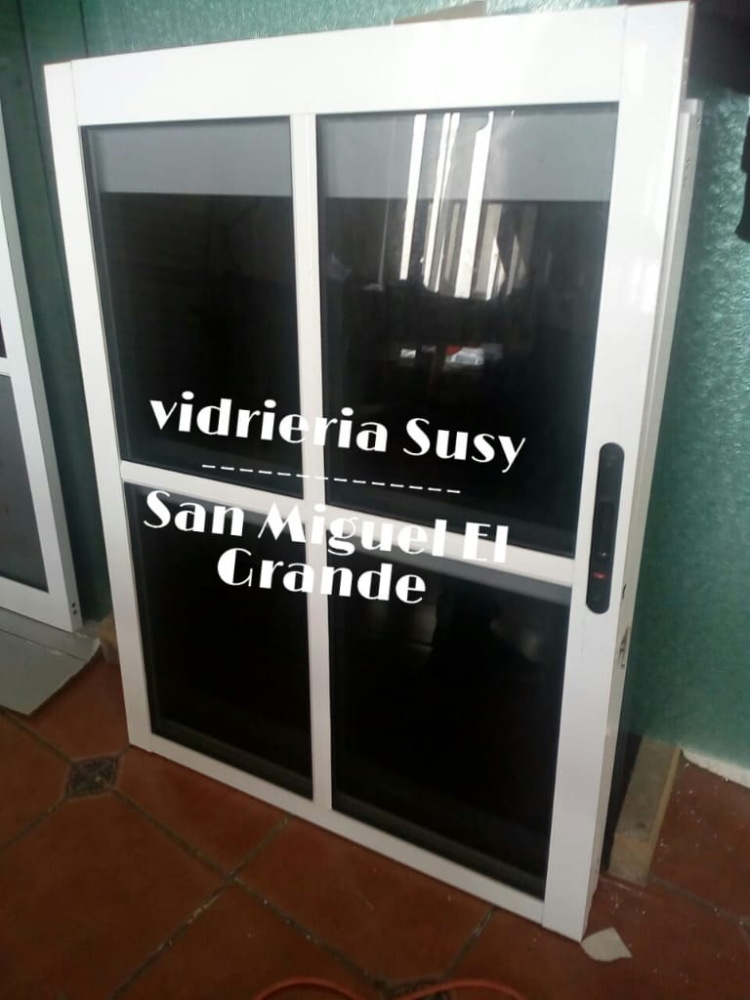_ _
_ _
_
 _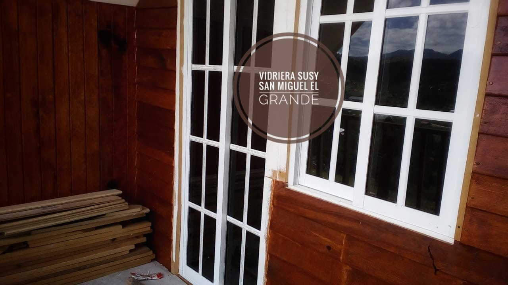_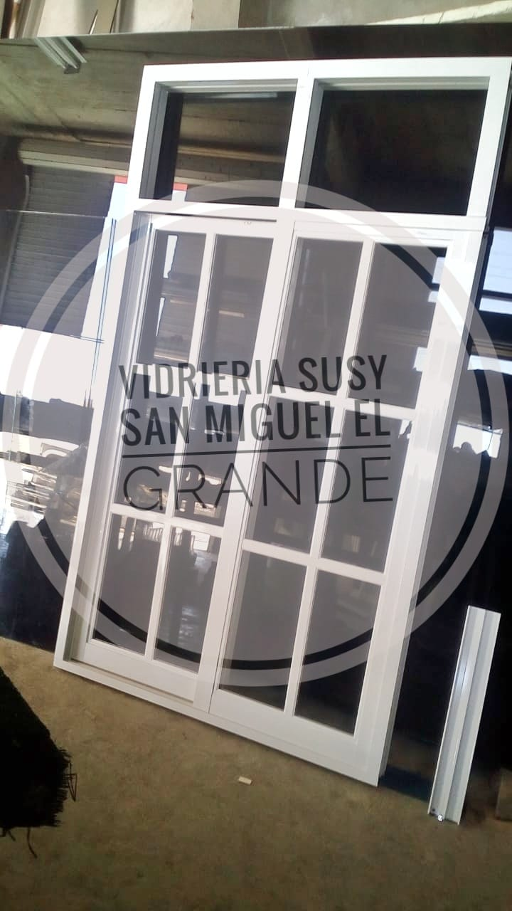_
_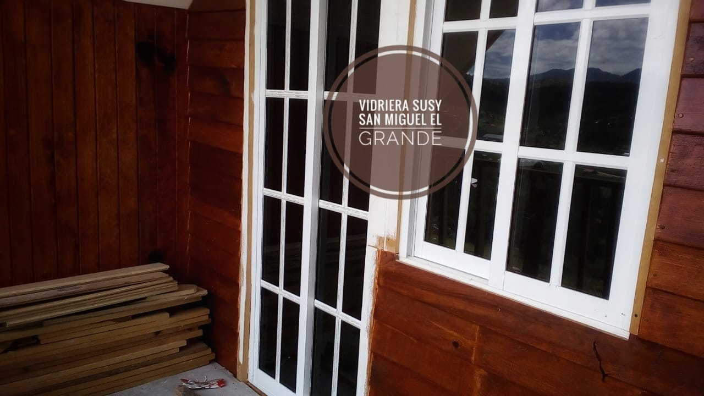_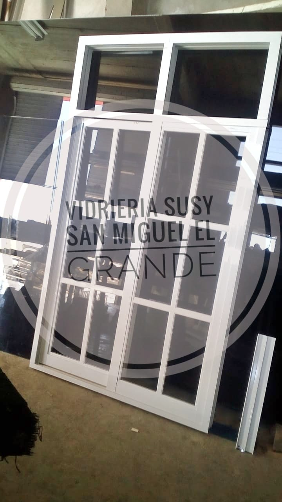_ 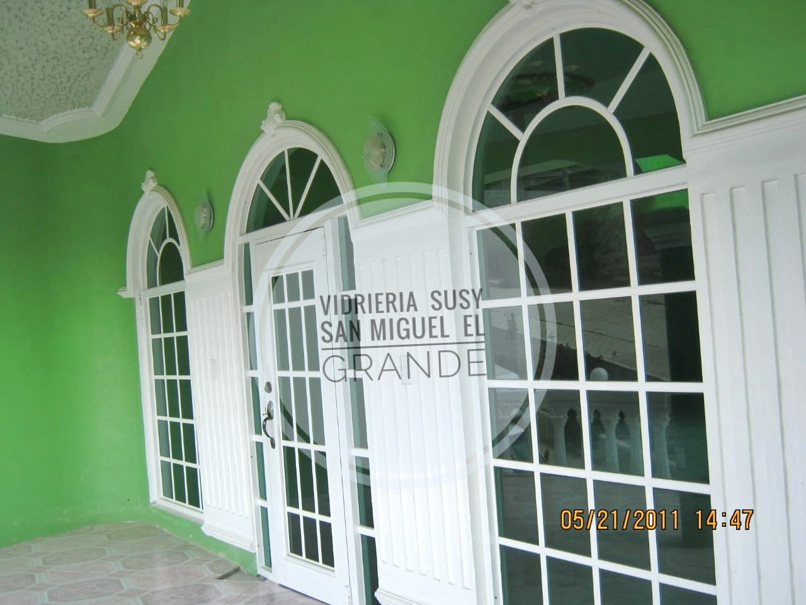_
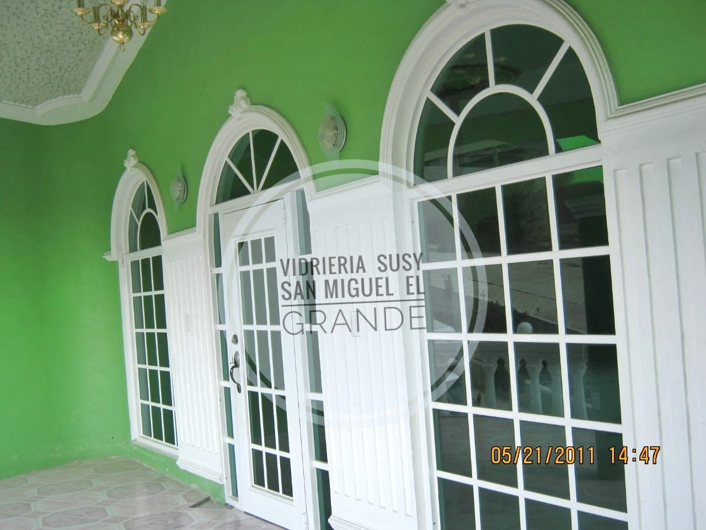_ _
_ _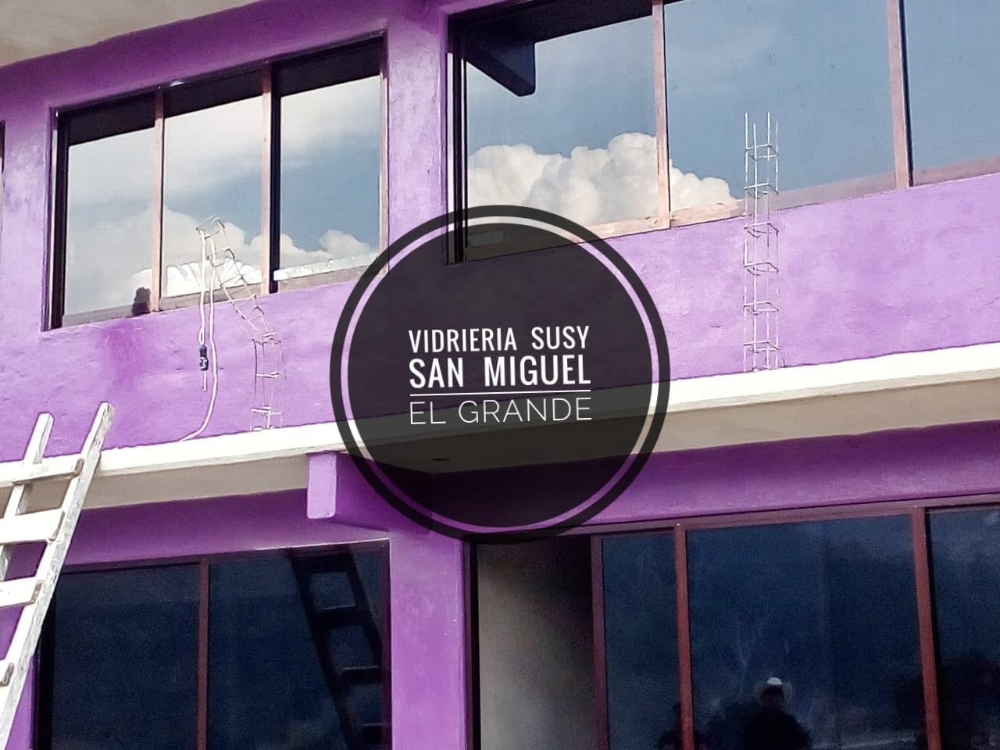
_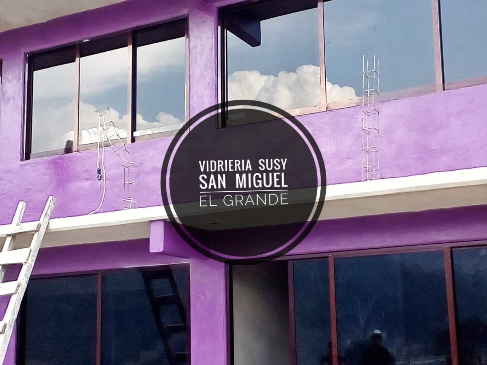
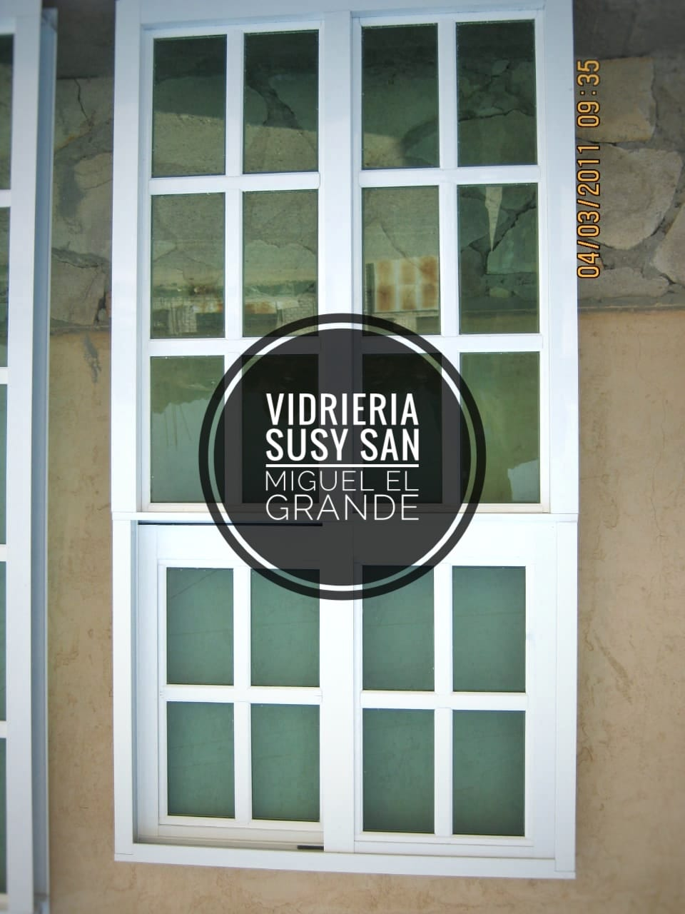_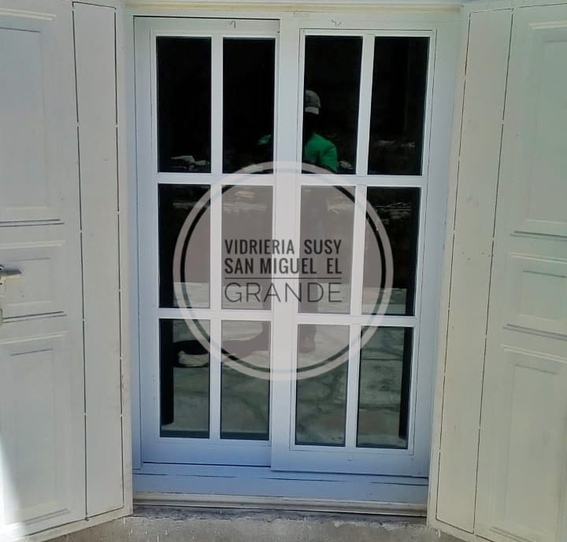
-Puertas residenciales linea Euro Vent

-Canceles en general
_ _
_
 _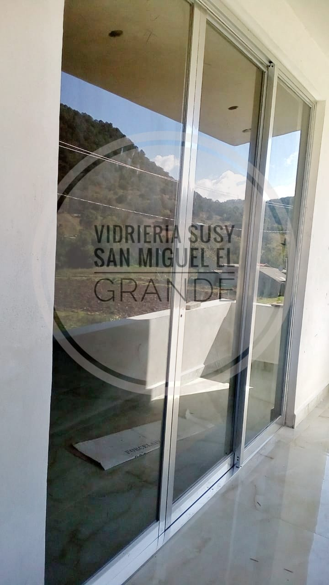
_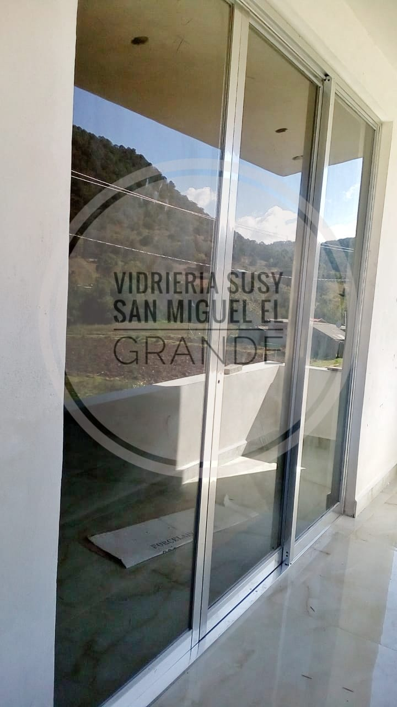 -Vitrinas

-Domos
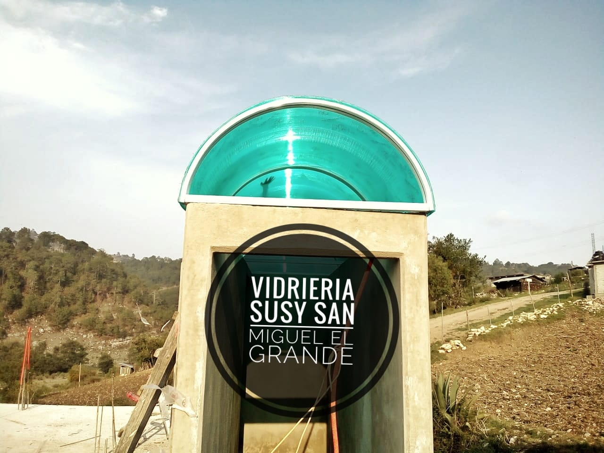_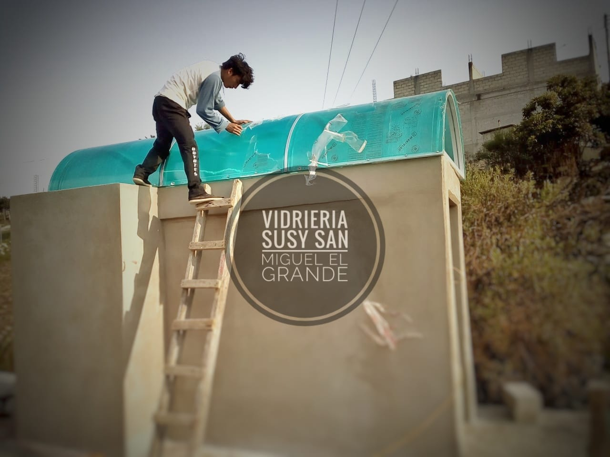-Puertas para Baños,exterior e interior en general
 _
_ _
_ _
_ .
.-Exhibidores
 _
_